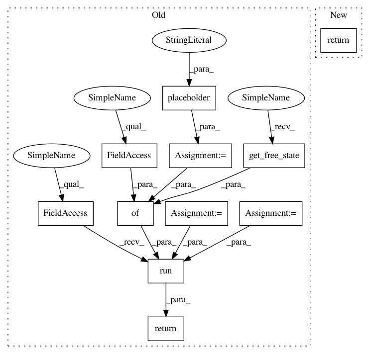

b84b7df8bf23aee3cb98b0390aa69f7ee31fe30a,GPflow/model.py,GPModel,predict_density,#GPModel#Any#Any#,205
Before Change
ignoring correlations between them. The result is a matrix the same
shape as Ynew containing the log densities.
tf_Xnew = tf.placeholder("float64")
tf_Ynew = tf.placeholder("float64")
with self.tf_mode():
pred_f_mean, pred_f_var = self.build_predict(tf_Xnew)
pred_y_density = self.likelihood.predict_density(pred_f_mean, pred_f_var, tf_Ynew)
return self._session.run(pred_y_density,
feed_dict={self._free_vars:self.get_free_state(),
tf_Xnew:Xnew,
tf_Ynew:Ynew })
After Change
shape as Ynew containing the log densities.
pred_f_mean, pred_f_var = self.build_predict(Xnew)
return self.likelihood.predict_density(pred_f_mean, pred_f_var, Ynew)
In pattern: SUPERPATTERN
Frequency: 3
Non-data size: 11
Instances
Project Name: GPflow/GPflow
Commit Name: b84b7df8bf23aee3cb98b0390aa69f7ee31fe30a
Time: 2016-02-15
Author: james.hensman@gmail.com
File Name: GPflow/model.py
Class Name: GPModel
Method Name: predict_density
Project Name: GPflow/GPflow
Commit Name: b84b7df8bf23aee3cb98b0390aa69f7ee31fe30a
Time: 2016-02-15
Author: james.hensman@gmail.com
File Name: GPflow/model.py
Class Name: GPModel
Method Name: predict_y
Project Name: GPflow/GPflow
Commit Name: b84b7df8bf23aee3cb98b0390aa69f7ee31fe30a
Time: 2016-02-15
Author: james.hensman@gmail.com
File Name: GPflow/model.py
Class Name: GPModel
Method Name: predict_f
Project Name: GPflow/GPflow
Commit Name: b84b7df8bf23aee3cb98b0390aa69f7ee31fe30a
Time: 2016-02-15
Author: james.hensman@gmail.com
File Name: GPflow/model.py
Class Name: GPModel
Method Name: predict_density